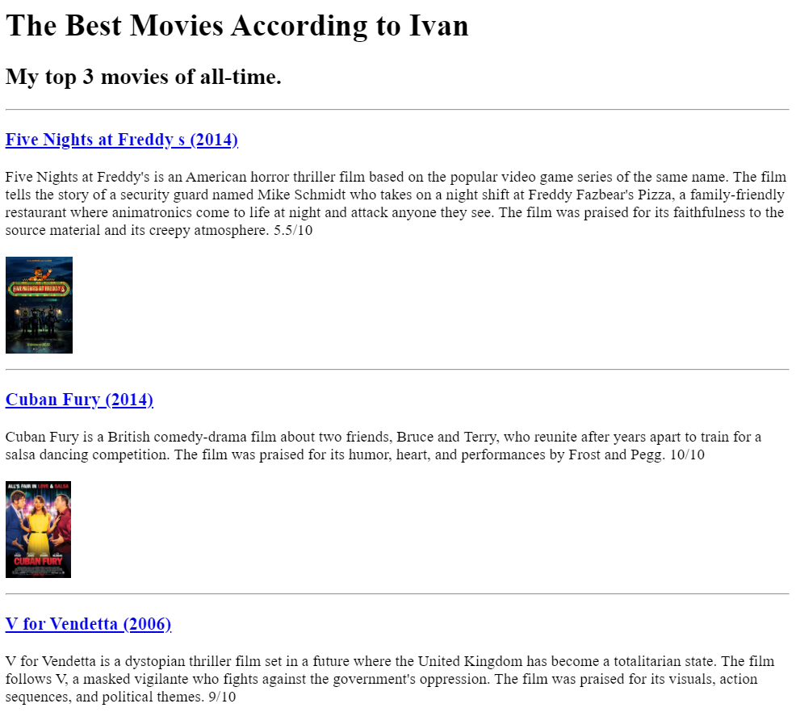
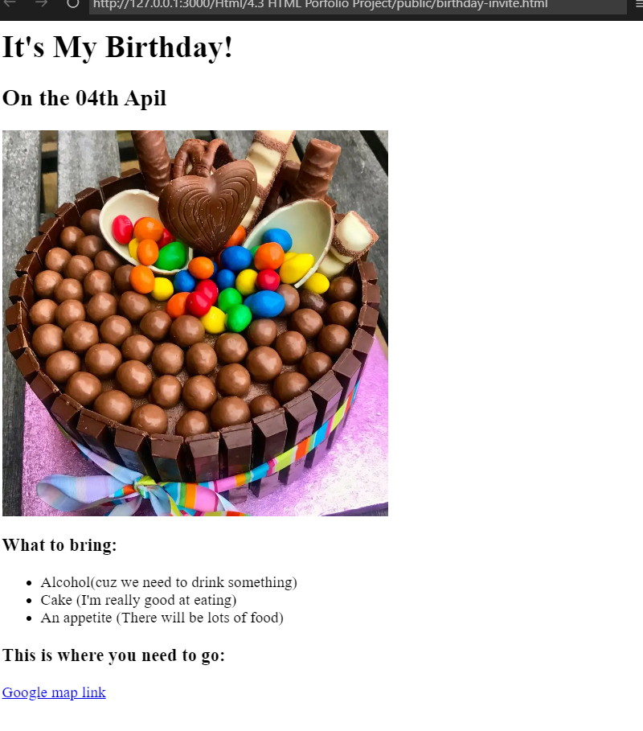

The Best Movies According to Ivan” is a curated list of Ivan’s top three all-time favorite movies. This selection offers a unique blend of genres, from the chilling horror of “Five Nights at Freddy’s” to the heartwarming comedy-drama of “Cuban Fury”, and the dystopian thriller “V for Vendetta”. Each film is accompanied by a brief synopsis and a personal rating, providing a glimpse into Ivan’s cinematic tastes. Whether you’re a fan of horror, comedy, or political thrillers, this list has something for everyone. Enjoy exploring Ivan’s cinematic universe!
It features a delicious-looking chocolate cake adorned with colorful candy toppings and a chocolate bunny, symbolizing a festive and joyful celebration. The text indicates that the party will be held on April 4th, and guests are encouraged to bring alcohol and an appetite for the abundance of food that will be served. It’s a delightful representation of a fun-filled birthday celebration. Enjoy your party!
